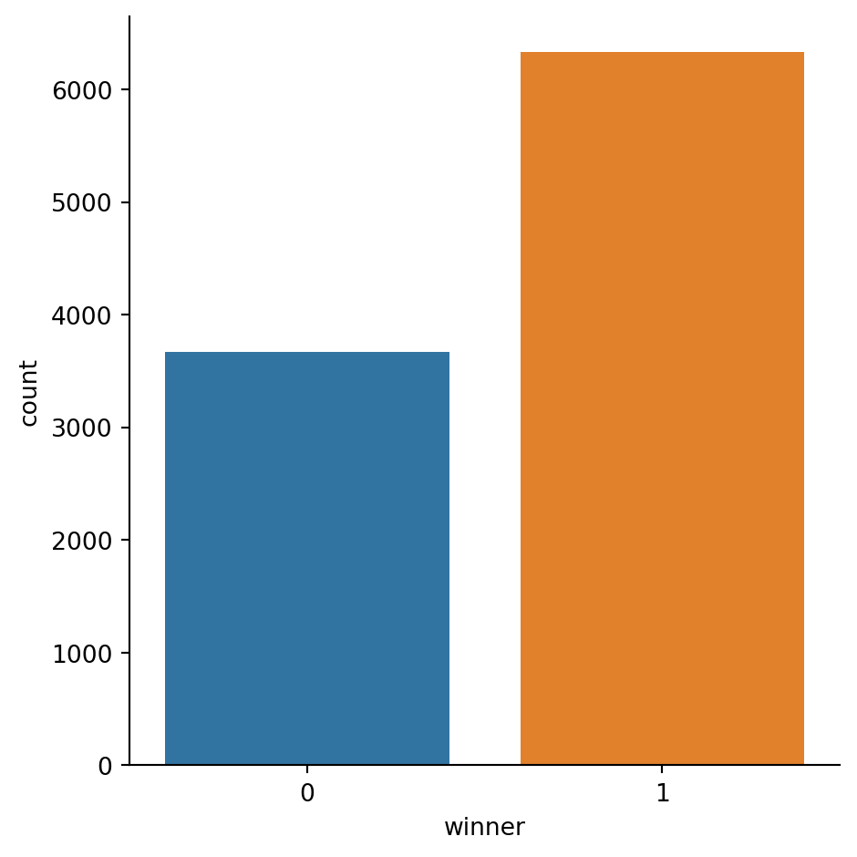

import numpy as np
import pandas as pd
import seaborn as sb
import scipy as sp
def die_roll():
roll = np.random.randint(1,7,1)[0]
return(roll)
results = []Simulating My Daughter’s First Board Game in Python
python
simulation
Learning to play
Children learn as they play. Most importantly, in play children learn how to learn.
Not too long ago, my grandparents gifted my daughter her first board game: First Orchard. It’s a simple little game that aims to teach kids how to follow game rules and how to take turns, as well as reinforcing toddler basics like counting, hand-eye coordination1, and colors. Here’s the premise:
There are four, different colored “trees” in the gamespace (“orchard”; probably played on the floor) with four fruit apiece: Green apples, yellow pears, red apples, and blue plums.
There is a hungry crow that will eat all of the fruit if they make it into the orchard; they start the game five movements away.
There is a six-sided dice. Four of the sides correspond to the colors of the tree (green, yellow, red, blue), a basket that allows you to take from any tree, and one has a image of a crow.
Players take turn rolling the dice. If they get a color, they take a fruit from the tree associated with that color. If all the fruit has already been picked, nothing happens. If a basket is rolled, then the player can pick a fruit from any tree. If the crow is rolled, the crow is advanced one space.
The game ends when all of the fruit has been picked from the tree (the players collectively win!) or when the crow reaches the orchard (the players lose).
As I spent time playing2 with my daughter, I realized that we were winning. A lot. Which made sense to me. One lesson that all children (and all us children grown tall) must learn is how to lose—but it’s admittedly far easier to teach a kid how to follow rules if they think there’s a strong chance that the rules will lead to success. (Though not a perfect chance so that the game is engaging and has risk and stakes). I wondered though: Were we just on a lucky streak or is the game actually biased towards the players? How long do the games usually take? Are there different average lengths between successes and failures? And if it is biased, how much more likely is success than failure?
Simulating the game in python
In order to see how generous this game is to the players, I decided to code it up in python.
Set-up
First I imported my libraries, made a quick little “roll the dice” function, and then setup an empty array for the results:
From here, we can actually get down to articulating the rules/procedures of the game in python.
Encoding the game rules in, well, code
Game Start
First, let’s get the game instantiated. We start with 4 different colored “trees” with 4 fruit apiece, a crow that needs to move 5 spaces before getting to the “orchard” (-5) , the number of turns that have elapsed (starting at zero), and the “orchard”—the collection of trees and the number of fruit that have yet to be picked (16 to start)
red = 4
green = 4
yellow = 4
blue = 4
crow = -5
turns = 0
orchard = [red,green,yellow,blue]
orchard_sum = sum(orchard)
orchard_sum16The game continues while either the sum of fruit in the orchard is greater than 0 or the crow’s distance is less than zero . So going to use a while loop. Every loop is going to be a turn; so every go round is going to increment turn and roll the dice.
while orchard_sum != 0 and crow != 0:
turns += 1
roll = die_roll()Depending on how that roll lands we’re going to do one of a few things:
Advance the crow:
Move the crow forward if the dice lands on a 6.
if roll == 6:
crow += 1Take from a specific tree:
Since I defined orchard as [red,green,yellow,blue], rolling a 1 will take from the red tree, 2 will take from green, 3 from yellow, 4 from blue—but only if the tree that was rolled actually has some fruit left! Otherwise, no action happens.
elif 1 <= roll <= 4:
if orchard[roll-1] > 0:
orchard[roll-1] = orchard[roll-1] - 1
else:
continueTake from any tree
This one took a bit of thinking. What I decided to do was first ensure that all of the trees weren’t already at 0. If they weren’t then I decided to take from the tree with the most amount of fruit remaining. My thought being that, while it might feel good as a player to wrap-up a tree and bring it to zero, that would effectively prematurely eliminate one of the sides of the dice from doing anything productive. I had the feeling that a longer game would be biased towards the crow so I wanted to avoid that as much as possible.
elif roll == 5:
if max(orchard) != 0:
largest_remaining = orchard.index(max(orchard))
orchard[largest_remaining] = orchard[largest_remaining] - 1
else :
continueEnding the turn (and game)
Finally, determining the new sum in the orchard to determine if it’s time to kill the while loop. But, before the loop is killed, determining if the player or the crow is the winner.
orchard_sum = sum(orchard)
if game_sum == 0:
winner = 1
elif crow == 0:
winner = 0And then, once the loop is broken, recording whether the player was the winner and the number of turns it took.
results.append({'winner':winner, 'turns':turns})Running the simulation
Let’s go ahead and run this 10,000 times to get a sense of the game’s asymptotic behavior. You can click on the arrow to see how all the code comes together.
10,000 simulated games
np.random.seed(131313)
for x in range(0,10000):
red = 4
green = 4
yellow = 4
blue = 4
crow = -5
turns = 0
orchard = [red,green,yellow,blue]
orchard_sum = sum(orchard)
while orchard_sum != 0 and crow != 0:
roll = die_roll()
turns += 1
if 1 <= roll <= 4:
if orchard[roll-1] > 0:
orchard[roll-1] = orchard[roll-1] - 1
else:
continue
elif roll == 5:
if max(orchard) != 0:
largest_remaining = orchard.index(max(orchard))
orchard[largest_remaining] = orchard[largest_remaining] - 1
else :
continue
elif roll == 6:
crow += 1
orchard_sum = sum(orchard)
if orchard_sum == 0:
winner = 1
elif crow == 0:
winner = 0
results.append({'winner':winner, 'turns':turns})And convert the results dictionary into a pandas dataframe
game_data = pd.DataFrame(results)Exploring the Results
Let’s take a look at how often people win the game!
sb.catplot(data = game_data, kind = "count",
x = "winner")<seaborn.axisgrid.FacetGrid at 0x2a72bc2b7d0>
Seems like the players are winning it about 65% of the time! Well
print(100 * game_data["winner"].mean(),"%")63.27 %Specifically.
Let’s see if the number of turns vary:
game_data.groupby(["winner"]).mean().style.set_properties(**{'color':'black'})| turns | |
|---|---|
| winner | |
| 0 | 18.655323 |
| 1 | 22.012170 |
It looks like it takes longer for the player to win over the crow; if the crow’s going to win, it’s going to do so in about 19 turns. If the player wins, it’s going to take about 22 turns. May not sound like much but you try to keep a toddler’s attention for three extra turns!
Given how many simulations I ran, I doubt that this will be anything other than “statistically significant” but it couldn’t hurt to check.
sp.stats.ttest_ind(game_data['turns'], game_data['winner'], equal_var = False)Ttest_indResult(statistic=489.4841664968918, pvalue=0.0)LMAO a t stat of 489. NOW THIS IS POD RACING P-HACKING.
Conclusion:
It looks like my daughter’s first game is pretty strongly biased towards the player winning! Simulating the game 10,000 times reveals that players can expect to win about 65% of the time. Crows tend to win faster than players; if the fruit gets munched by a pesky peckish corvid, it’s going to happen sooner rather than later. This suggests to me that if the crow wins in this particular game, it’s because the player has a streak of bad luck. I might at some point tweak the rules a bit or record more granular data to delve a bit deeper, but I think I’ll cut this for now so I can go back to, you know, playing the actual game with my daughter.
Footnotes
If anyone has ever seen me perform a sport that isn’t running, they’d know that needing to reinforce “hand-eye coordination” isn’t exclusively a thing for toddlers—but I digress.↩︎
Well, at least playing as one does with a toddler: Initially sticking to the rules, trying to cajole them into continuing to stick with the rules, riffing off the original rules to maintain a semblance of order, finally surrendering on the concept of order—the pieces gleefully strewn across the room a reminder that “order” is but a fleeting punctuation in the ceaseless entropic chaos of existence that you try to convince the toddler to help tidy before trying to cajole them to continue tidying before…↩︎
Reuse
Citation
BibTeX citation:
@online{licari2023,
author = {Peter Licari},
title = {Simulating {My} {Daughter’s} {First} {Board} {Game} in
{Python}},
date = {2023-02-16},
url = {www.peterlicari.com/posts/rosie-game-sim-23},
langid = {en}
}
For attribution, please cite this work as:
Peter Licari. 2023. “Simulating My Daughter’s First Board Game in
Python.” February 16, 2023. www.peterlicari.com/posts/rosie-game-sim-23.